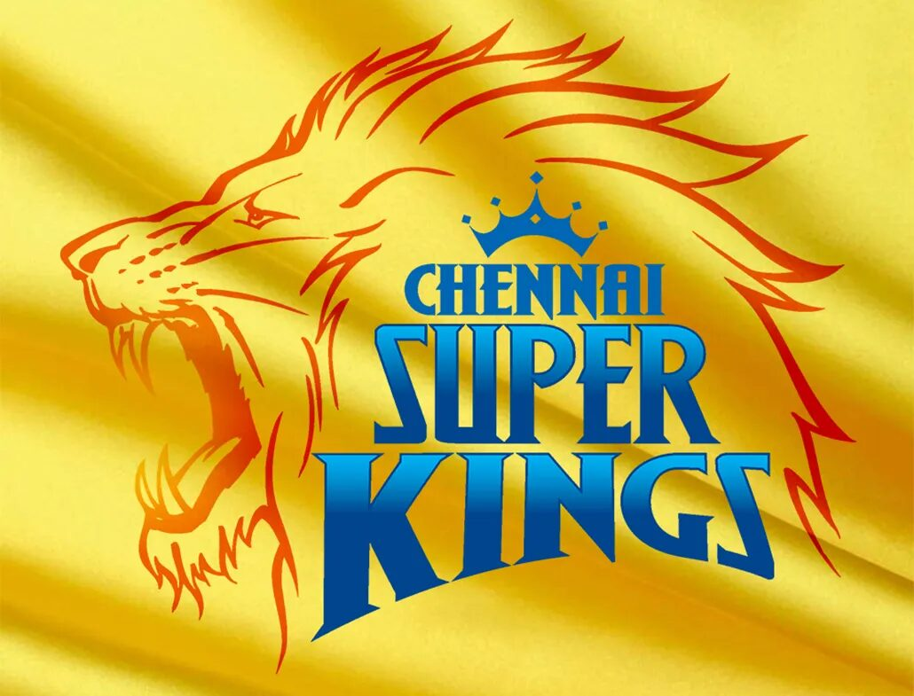
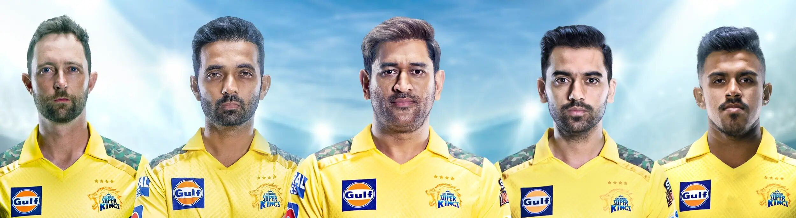
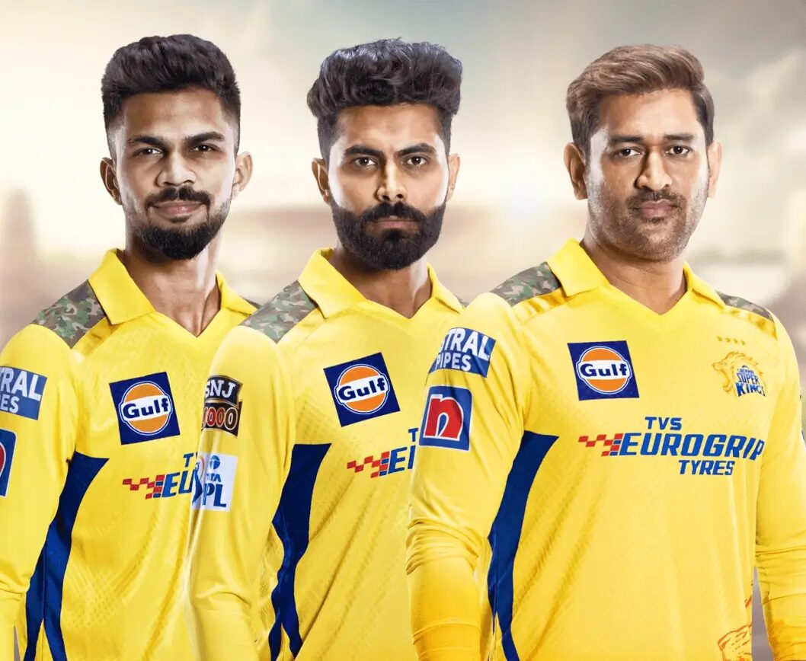

Стремежът към успех, победителският дух и неотклонната любов към спорта. Тези ценности са в основата на философията на Gulf повече от век — и ние с радост ги споделяме с нашите партньори.
Сътрудничеството на Gulf с Chennai Super Kings продължава повече от десетилетие — подкрепяме отбора още от скромното му начало в края на 2000-те. Chennai Super Kings са въплъщение на страстта и стремежа към играта — винаги влагат сърце и душа, за да бъдат най-добрите и да надвият всички шансове. Този невероятен отбор продължава да вдъхновява мнозина със себеотдаването си към отборната игра и безупречното представяне — а нашето партньорство е празник на победителския дух.

По-смели. По-храбри. Без страх да чупят калъпите. Също като Gulf, Chennai Super Kings спечелиха сърцата и умовете на милиони с отдадеността си към съвършенството и неизменно безупречното си представяне.
За да стигнеш по-далеч и да постигнеш повече, е важно да приемаш обратната връзка и да я използваш като гориво за следващото ниво на развитие — и тук споделените ни ценности се срещат отново. Както Chennai Super Kings ценят мнението на феновете си, така и Gulf слуша внимателно клиентите си и създава най-добрите в класа си продукти, които отговарят точно на нуждите им.
Всяко партньорство на Gulf отразява обещанието ни да бъдем неудържими. Крикетът въплъщава тези ценности, а Chennai Super Kings са истинска гордост за спорта — справят се с напрежението и натиска на всеки мач с подвижността и смирението, с които са известни и обичани.
От 2010 г., когато започна партньорството ни, Gulf и Chennai Super Kings споделят същата отдаденост и ангажираност, които проявяваме към клиентите си вече почти век. Да разбираме какво искат партньорите и клиентите ни е нашата работа — тя стои в основата на век всеотдайно обслужване.


Наследството на Chennai Super Kings привлича вниманието на света и спечели сърцата и умовете на почитателите на крикета навсякъде. От създаването си през 2008 г. насам отборът постоянно се изкачва към върха на Индийската Висша лига (IPL) и достига легендарен статут за изумително кратко време. Смятан за един от най-ценните отбори в IPL и в международната крикет общност, днес той има множество отличия, награди и трофеи.
На терена и извън него Chennai Super Kings са известни със своята изобретателна игра и истинско уважение към съперниците и армията си от фенове. Новаторски дух, смели намерения, нежелание да приемат „не“ за отговор — същата упоритост и решителност забелязахме в отбора още през 2013 г., когато те все още бяха изгряващи звезди.
Партньорството между Gulf и Chennai Super Kings е широко отбелязвано отвъд границите — връзка, която е предопределена да продължи още много години.